Thank you for purchasing this script. If you have any questions that are beyond the scope of this help file, please feel free to email me via my user page contact form here. Thank you!
Server Requirements
- PHP 5.3+
- PHP Mysqli Extension
- PHP Curl Extension Enabled
Folder and Files write Permissions
Make sure that this folders and files are writable.
Folders
application/cacheapplication/logsapplication/configapplication/archivesapplication/db/backupsassets/cache
Files
application/config/application.phpapplication/config/database.php
Installing the Script
Auto Installer
Extract and upload the files from the Zip file to your server.
Point your browser to the directory where you uploaded the files and follow the install steps.
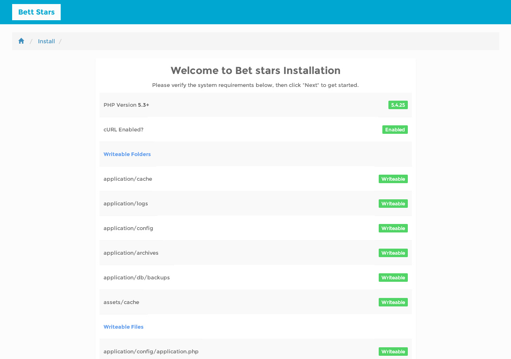
Manual Install
Step 1 - Unzip and Upload
Extract and copy the files from the Zip file you have downloaded from CodeCanyon to your server.
Step 2 - Create a Database
Create a database using PHPMyAdmin from your hosting panel to your server.
Open PHPMyAdmin and go to databases.
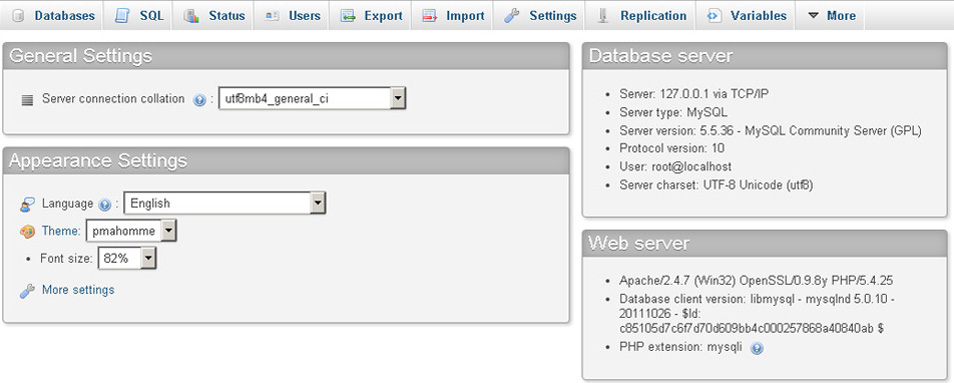
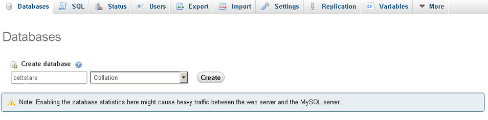
Step 3 - Import the SQL File
Go to the databese you have just created and click import.
Click on Choose File ,locate the bettstars.sql file
(It should be in the sql folder of your download package) and click Go.
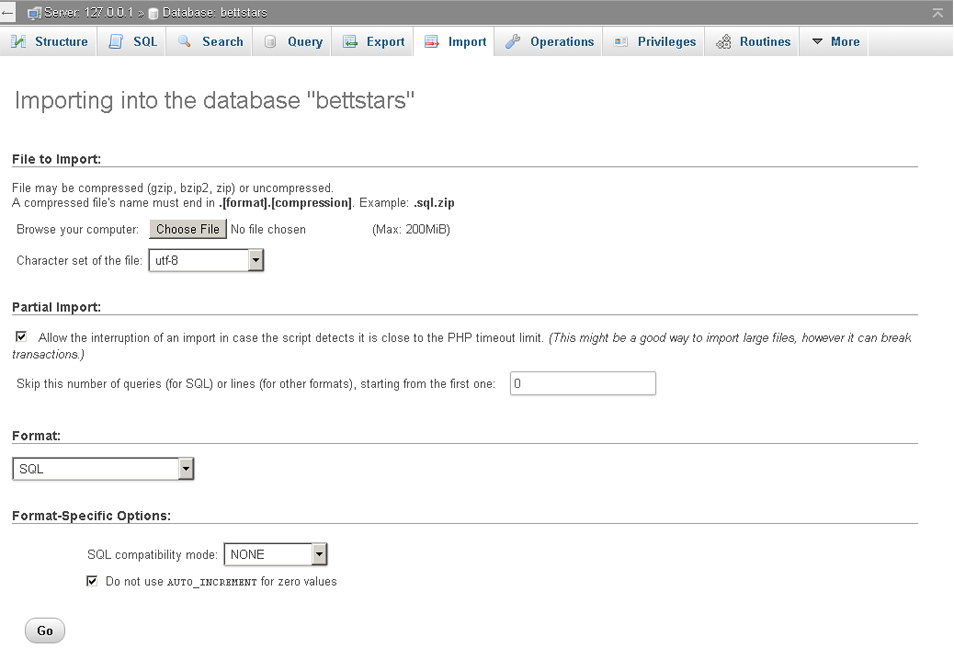
Installation is now complete, and you can configure your Site.
Login with the admin account and from the dropdown menu on the right choose control panel.
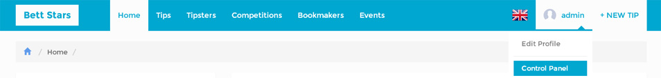
To configure Site Settings go to Admin > System Setting > Settings.
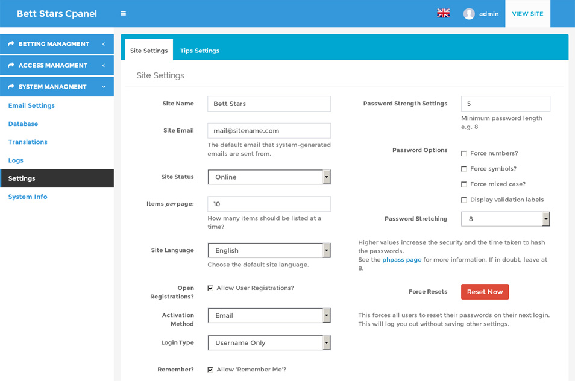
In Site Settings you can set up.
- Site name - Your site name
- Site Email - For System Generated Emails.
- Site Status - Online or Offline(Maintenance Mode).
- Site Language - The defaul language for the site
- Activation type,login type password options and more.
Installation comes with demo content to help you speed up your populating proccess.
Categories like, Sports,Leagues, Events and odds are auto updated.
Cronjob.
For auto updating of the database you need to create a cronjob in your hosting cpanel.
Go to your Cpanel cronjobs and setup a cronjob with the following command
(Assuming you installed the script in your root folder)
/home/yourusername/public_html/index.php cron index
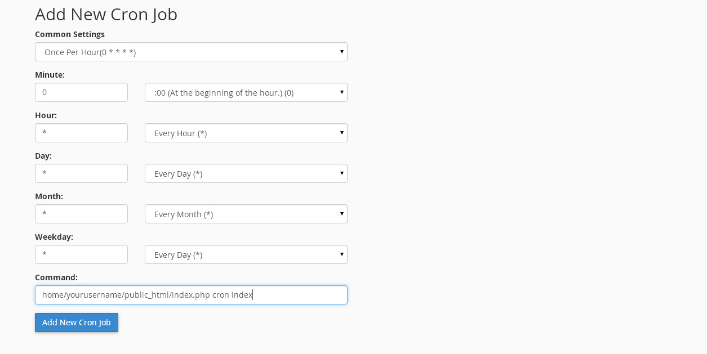
Get help from your hosting provider if any trouble
Depending on your hosting it could be any of the following.
php5-cli path/to/folder/index.php cron index
20 * * * * php path/to/folder/index.php cron index
php /home/username/public_html/index.php cron index
php-cli /home/username/public_html/index.php cron index
Testing on local server WAMP/XAMMP on windows
A cron.bat file is included to help you test live updates on local server on windows machine.
Set up shedulled task to simulate cron job.
Create a sheduled task to run the cron.bat file located in the cron folder of the downloaded package.
The Content
Leagues,teams and events are auto updated, installation comes with 330+ leagues and 3000+ teams added
If a new league or team is added to database you will need to assign country for the league,or logo for the team.
Teams View Panel
Choose Teams from the navigation on the left in admin panel.
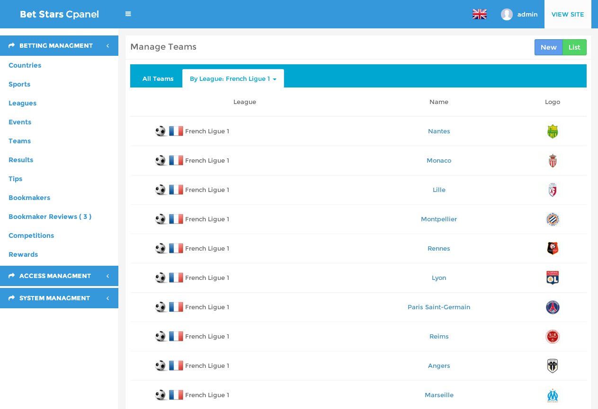
Click on team name to edit team.
- You will be presented with the team edit form.
- Choose team logo.
Tips Management Page allows you to manage the tips posted to the site.
The default status of the tip is DRAFT.You can choose to activate the tip,
and the tip will be displayed on the site with a Pending status.
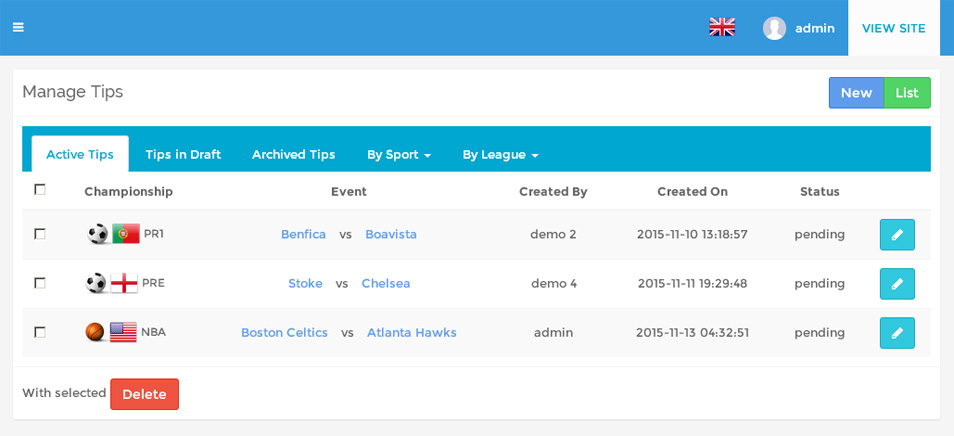
Editing a Tip
You can review and edit the tips by clicking the edit button (pencil icon) on the right.
You will be displayed with the edit tips page.
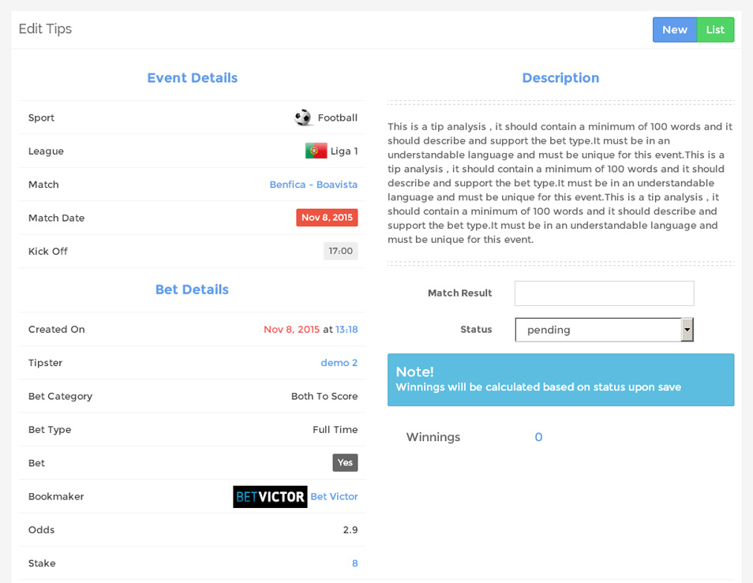
If event for the tip is over you can assign result of the event and choose a status of Won / Lost for the tip.
The winnings will be auto-calculated based on the status assigned.
Winnings Calculation Formula
- Status Won – winnings = (Stake*Odds)-Stake
- Status Lost – winnings = (-Stake)
- Status Void – winnings = 0
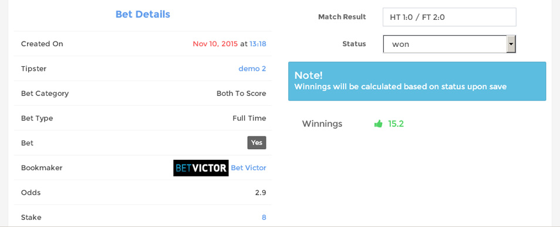
Bett Stars has a powerfull Role/Permission System.
Allowing you to control access in every page and section of the site.
Creating Roles
Go to New Role page and insert Name, Description and type of the role.
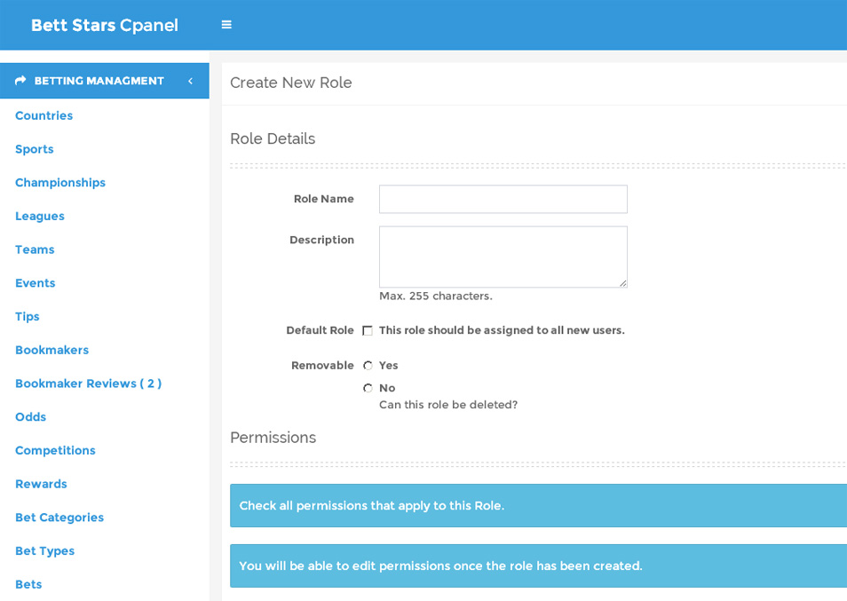
After the role is created you can assign permissions to the role.
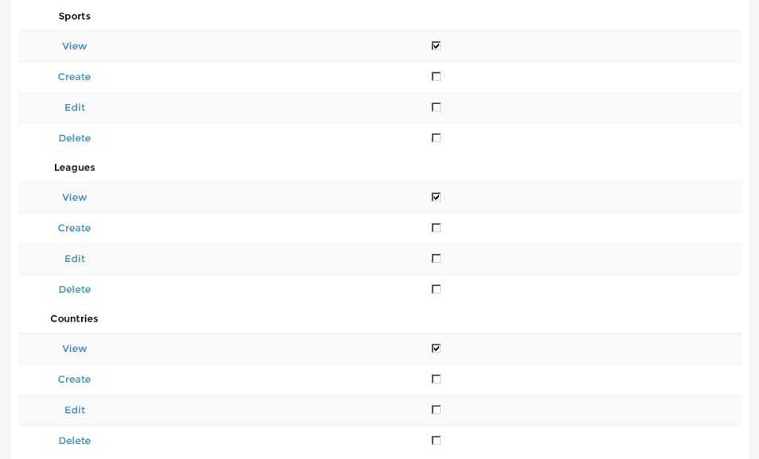
Or you can use the permissions matrix to quickly add or remove permission for specific role.
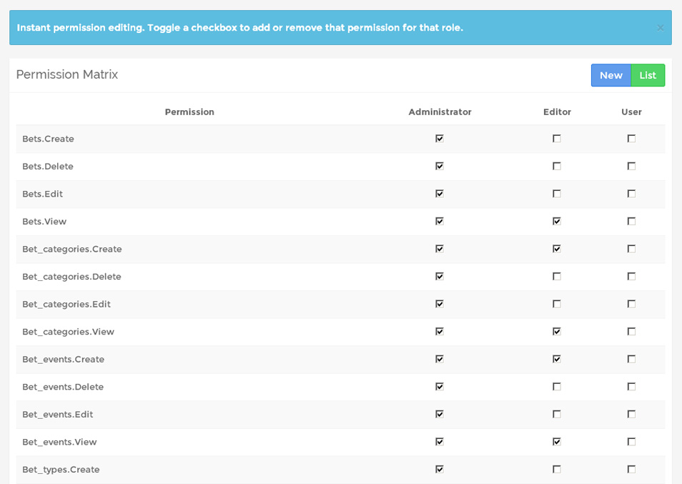
To translate a language go to System Settings > Translations.Choose the language to be translated
or choose other to add a new language, and click select.
After you click select, choose from the list what language file you want to translate to the selected language
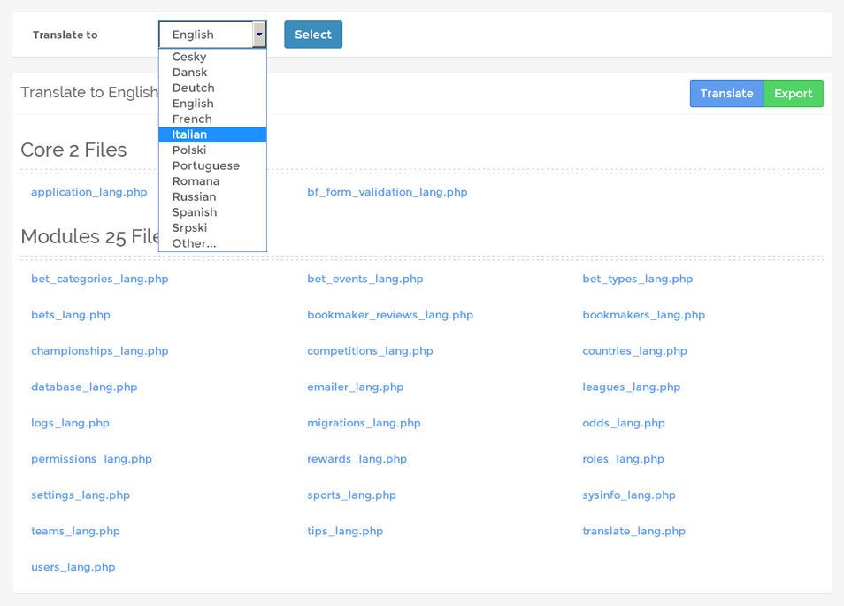
Start Translating
Fill in the field on the right with the values of the translating language and click save.
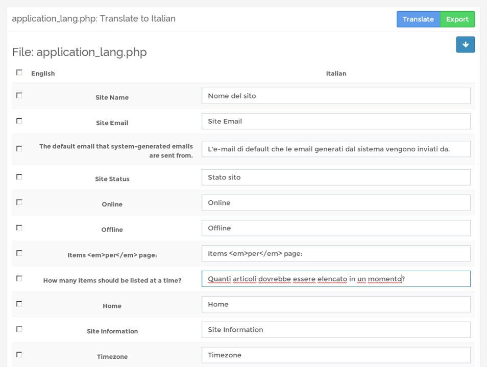
Note! Images are not included in the download package
Credits to:
- Auth,Template,Assets and other Helpers & Libraries By
CI Bonfire
Jump Start framework for Codeigniter Applications
- Admin Panel & Documentation based on AdminLTE Template By Almsaeedstudio
- Country flags By Senojflags
- Sport Icons By Findicons
Once again, thank you so much for purchasing this script. As I said at the beginning, I'd be glad to help you if you have any questions relating to this script.